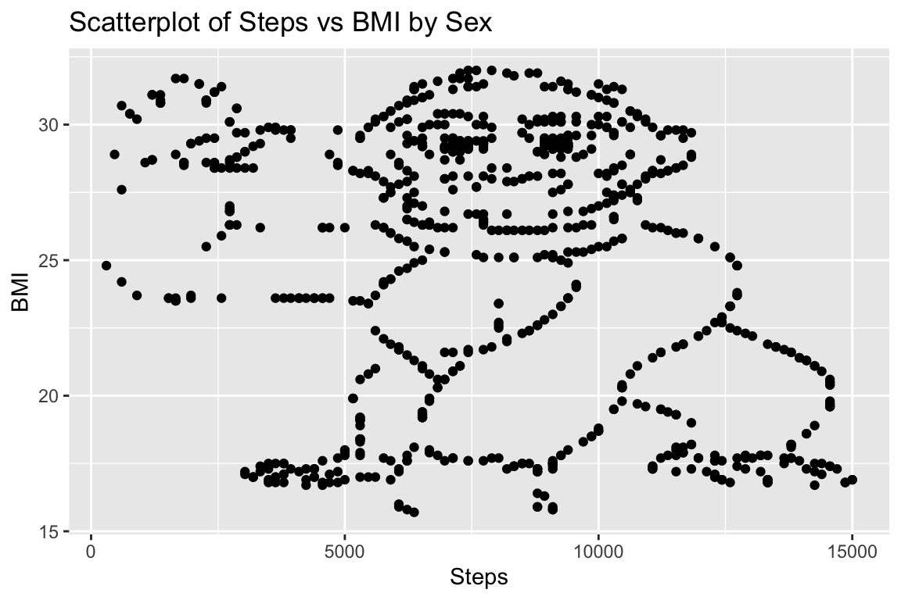

Chapter 1 Week 1: DIYS 1
1.1 Aims:
- To refresh your R skills.
- Performing some basic analyses (i.e., descriptive, exploratory, and hypothesis testing ones).
1.2 First Part: Descriptive Analysis
- Download the files
f.txtandm.txt. They contain information on the number of steps in a day and the body mass index (BMI) for female and male individuals respectively. Open them and explore the first 5 observations for each file.
Adjust using the links from GitHub
For the exercise before publishing the solution
# open data
female <- read.table("~/Documents/0_IPZ/2023_2/Leemann-QuantMethods/QuantitativeMethods/QuantitativeMethods/Data/f.txt", header = TRUE, sep = "\t")
# explore data
head(female, 3)## ID steps bmi
## 1 3 15000 17.0
## 2 4 14861 17.2
## 3 5 14861 17.2# open data
male <- read.table("~/Documents/0_IPZ/2023_2/Leemann-QuantMethods/QuantitativeMethods/QuantitativeMethods/Data/m.txt", header = TRUE, sep = "\t")
# explore data
head(male, 3)## ID steps bmi
## 1 1 15000 16.9
## 2 2 15000 16.9
## 3 6 14861 16.8Some key functions in dplyr can be categorized as dealing with columns (e.g., select, mutate), rows (e.g., filter, distinct, arrange), or groups (e.g., group_by, summarise, and count). Let’s use some of them!
- Select only the columns ‘steps’ and ‘bmi’. Do it only for the first three observations of the data on females.
# It's necessary to restate it in each r code section so the book can be rendered.
library(dplyr)
head(female, 3) %>%
select(steps, bmi)## steps bmi
## 1 15000 17.0
## 2 14861 17.2
## 3 14861 17.2- Select all columns except ‘ID’. Do not use
stepsnorbmi. Do it only for the first three observations of the data on females. Is the resulting table the same as the previous point? If not, check your answer.
## steps bmi
## 1 15000 17.0
## 2 14861 17.2
## 3 14861 17.2Note: to check the documentation of select, use ?select on the console.
- Use
mutateto create a new column in the dataframefemalecalledStepsTimesBmiformed as the product ofstepsandbmi. Show the first three observations for the new variable.
## [1] 255000.0 255609.2 255609.2- Get rid of the column
StepsTimesBmi. Usesubset.
- Use filter to find the share of female individuals with a
bmihigher than 20 and lower than 21.
library(dplyr)
f20_21 <- female %>%
filter(bmi>20, bmi<21)
cat("The share of female individuals with a `bmi` higher than 20 and lower than 21 is:", nrow(f20_21)*100/nrow(female), "%\n")## The share of female individuals with a `bmi` higher than 20 and lower than 21 is: 2.28013 %- Use filter to find the share of female individuals with a
bmihigher than 20 and lower than 21 while at the same time having less than 14000steps.
library(dplyr)
fBMI20_21_Step14000 <- female %>%
filter(bmi>20, bmi<21, steps<14000)
cat("The share of female individuals with a `bmi` higher than 20 and lower than 21 while at the same time having less than 14000 is:", nrow(fBMI20_21_Step14000)*100/nrow(female), "%\n")## The share of female individuals with a `bmi` higher than 20 and lower than 21 while at the same time having less than 14000 is: 1.737242 %- Use filter to find the share of male individuals with
IDnumber lower than 5 and higher than 860. Notice that you can use either&between conditions or simply a comma. Could any data set generate a different answer? Why?
library(dplyr)
m_5_860 <- male %>%
filter(ID<5 & ID>860)
cat("The share of male individuals with `ID` number lower than 5 AND higher than 860 is:", nrow(m_5_860)*100/nrow(male), "%\n")## The share of male individuals with `ID` number lower than 5 AND higher than 860 is: 0 %- Use filter to find the share of male individuals with
IDnumber lower than 5 or higher than 860. Use|between conditions. Could any data set generate a different answer? Why?
library(dplyr)
m_5_or_860 <- male %>%
filter(ID<5 | ID>860)
cat("The share of male individuals with `ID` number lower than 5 OR higher than 860 is:", nrow(m_5_or_860)*100/nrow(male), "%\n")## The share of male individuals with `ID` number lower than 5 OR higher than 860 is: 46.35838 %- Use
distinctto identify the share of male IDs that are unique.
unique_m_IDs <- male %>%
distinct(ID)
cat("The share of male IDs that are unique is:", nrow(unique_m_IDs)*100/nrow(male), "%\n")## The share of male IDs that are unique is: 100 %- Use
arrangeto find the three highest and lowest BMI values for males. Useslice_head.
## ID steps bmi
## 1 786 7894 32
## 2 847 7593 32
## 3 863 7431 32## ID steps bmi
## 1 1170 6366 15.7
## 2 614 9097 15.8
## 3 615 9097 15.89. group_by summarise count- Are there repeated ids within each data set?
# get package
# install.packages("dplyr")
library(dplyr)
# Check for repeated IDs in the female data set. How many are there?
repeated_ids_female <- female %>%
group_by(ID) %>%
filter(n() > 1)
cat("Number of repeated IDs in the female data set:", nrow(repeated_ids_female), "\n")## Number of repeated IDs in the female data set: 0# Check for repeated IDs in the male data set. How many are there?
repeated_ids_male <- male %>%
group_by(ID) %>%
filter(n() > 1)
cat("Number of repeated IDs in the male data set:", nrow(repeated_ids_male), "\n")## Number of repeated IDs in the male data set: 01.3 Second Part: Exploratory VS. Hypothesis-Testing Analysis
Please read the whole instruction before solving the exercise.
Each student will be randomly allocated to either doing the task 1 or 2 (a list containing those numbers will published). Both tasks are based on the same data sets used in the first part.
Notes:
- The details of the data origin will be published with the solution.
- Students allocated to each group are encouraged to do the task for the other group only after finishing their own task.
1.3.1 Preliminary steps: do this before doing the task that you were assigned to
- For each data set, create a new variable called
sex. Assign any value to each case, but make sure they are different.
- Create one data frame with all the IDs present in both data sets. How many cases are there? Use
dplyr’s join methods.
library(dplyr)
in_both <- inner_join(female, male, by="ID")
cat("The number of cases where an ID is in both data sets is:", nrow(in_both), "\n")## The number of cases where an ID is in both data sets is: 0- Now that you know that there are no repeated individuals across the data sets, consider whether a join method is the appropriate way of unifying both data sets. Try first with
full_joinand then withbind_rows. Which one should you use? Why? Finally, how many individuals does the new dataframe have?
library(dplyr)
all <- full_join(female, male, by="ID", copy=FALSE)
cat("The new dataframe has ", nrow(all), "individuals\n")## The new dataframe has 1786 individuals# Assuming that `sex` was created for each dataframe
all <- bind_rows(female, male, .id = NULL)
cat("The new dataframe has ", nrow(all), "individuals\n")## The new dataframe has 1786 individuals# Without assuming that `sex` was created for each dataframe
female <- read.table("~/Documents/0_IPZ/2023_2/Leemann-QuantMethods/QuantitativeMethods/QuantitativeMethods/Data/f.txt", header = TRUE, sep = "\t")
male <- read.table("~/Documents/0_IPZ/2023_2/Leemann-QuantMethods/QuantitativeMethods/QuantitativeMethods/Data/m.txt", header = TRUE, sep = "\t")
all <- bind_rows(female, male, .id = 'sex')
cat("The new dataframe has ", nrow(all), "individuals\n")## The new dataframe has 1786 individuals# Which assigns a number 1 for the first binded dataframe, and 2 for the second one. Hence, we can replace the values as follows.
all$sex <- ifelse(all$sex == 1, 'F', ifelse(all$sex == 2, 'M', all$sex))- What’s the share per sex in the unified dataframe from the previous point? Use ``
Consider using the packages dplyr, ``
1.3.2 Task 1:
- What do you conclude from the combined data set (i.e., the one formed using both the one for males and the one for females)?
- What questions did you ask yourself?
- Why did you ask those questions? Is there an intuition behind them?
- If so, what was your intuition?
- If not, how did you proceed?
- Why did you ask those questions? Is there an intuition behind them?
- Hint: consider visualizing how variables interact.
1.3.3 Task 2:
- Is the average number of steps for males and females statistically different?
- How do BMI and daily steps statistically relate to each other?
- Does that relationship depend on whether individuals are of one sex or another? If so, how?
- Is there an statistically significant negative correlation between the number of steps and the BMI for females?
- Is there an statistically significant positive correlation between the number of steps and the BMI for males?
- Does that relationship depend on whether individuals are of one sex or another? If so, how?
- 1st weeks, dplier: to check> to statistical analysis
- Doing basic code to make analysis (which is fine enough), but in dplier you could do it like this.
- Make descriptive statistics using an interesting
looking for something unknown in the dark, grope, feel blindly and make conjectures on what things are and how they are related. - Two groups: random selection: description similar? The smaller the group, the likelier that a random selection is not balanced? What about attrition?
Looking!=seeing: Different beliefs (non- and knowledge ones), different preferences, different attention focus -> different attention investment and emphasis Value of diverse academic community while keeping a minimal set of shared assessment rules: objectivity as continuum of increasing inter-subjective agreement
1.4 Graph
# Install and load the ggplot2 package if you haven't already
#install.packages("ggplot2")
library(ggplot2)
# Assuming you have a consolidated dataset named 'combined_data'
# Create a scatterplot of steps vs bmi
ggplot(female, aes(x = steps, y = bmi)) +
geom_point() +
labs(x = "Steps", y = "BMI") +
ggtitle("Scatterplot of Steps vs BMI by Sex") ggplot(male, aes(x = steps, y = bmi)) +
geom_point() +
labs(x = "Steps", y = "BMI") +
ggtitle("Scatterplot of Steps vs BMI by Sex") 